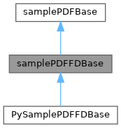
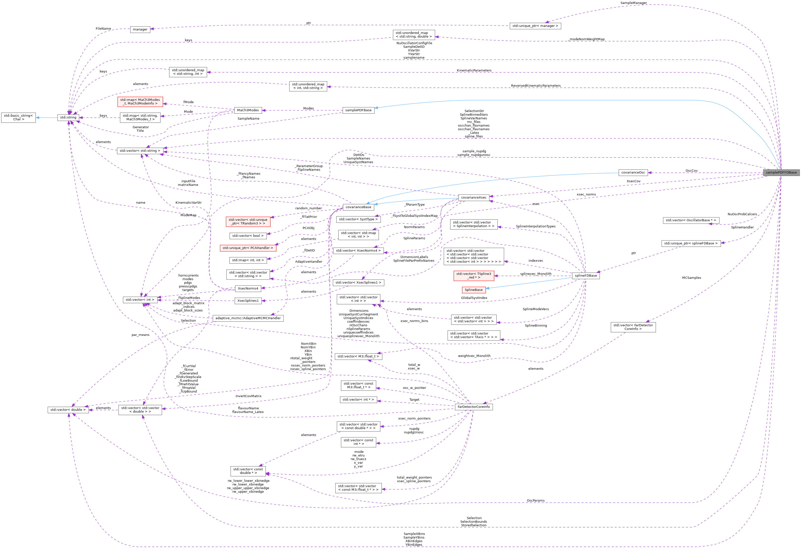

|
MaCh3 1.4.5
Reference Guide
|
Loading...
Searching...
No Matches
|
MaCh3 1.4.5
Reference Guide
|
Class responsible for handling implementation of samples used in analysis, reweighting and returning LLH. More...
#include <samplePDF/samplePDFFDBase.h>


Public Member Functions | |
| samplePDFFDBase (std::string ConfigFileName, covarianceXsec *xsec_cov, covarianceOsc *osc_cov=nullptr) | |
| virtual | ~samplePDFFDBase () |
| destructor | |
| int | GetNDim () |
| std::string | GetName () const |
| std::string | GetTitle () const |
| std::string | GetXBinVarName () |
| std::string | GetYBinVarName () |
| void | PrintIntegral (TString OutputName="/dev/null", int WeightStyle=0, TString OutputCSVName="/dev/null") |
| void | addData (TH1D *Data) override |
| void | addData (TH2D *Data) override |
| void | addData (std::vector< double > &data) override |
| void | addData (std::vector< std::vector< double > > &data) override |
| double | GetLikelihood () override |
| DB Multi-threaded GetLikelihood. | |
| void | reweight () override |
| M3::float_t | GetEventWeight (const int iSample, const int iEntry) const |
| void | SetupNuOscillator () |
| including Dan's magic NuOscillator | |
| virtual void | setupSplines (FarDetectorCoreInfo *, const char *, int, int) |
| void | ReadSampleConfig () |
| int | getNMCSamples () override |
| int | getNEventsInSample (int iSample) |
| std::string | getFlavourName (int iSample) |
| TH1 * | get1DVarHist (std::string ProjectionVar, std::vector< std::vector< double > > SelectionVec=std::vector< std::vector< double > >(), int WeightStyle=0, TAxis *Axis=nullptr) |
| TH2 * | get2DVarHist (std::string ProjectionVarX, std::string ProjectionVarY, std::vector< std::vector< double > > SelectionVec=std::vector< std::vector< double > >(), int WeightStyle=0, TAxis *AxisX=nullptr, TAxis *AxisY=nullptr) |
| TH1 * | get1DVarHistByModeAndChannel (std::string ProjectionVar_Str, int kModeToFill=-1, int kChannelToFill=-1, int WeightStyle=0, TAxis *Axis=nullptr) |
| TH2 * | get2DVarHistByModeAndChannel (std::string ProjectionVar_StrX, std::string ProjectionVar_StrY, int kModeToFill=-1, int kChannelToFill=-1, int WeightStyle=0, TAxis *AxisX=nullptr, TAxis *AxisY=nullptr) |
| TH1 * | getModeHist1D (int s, int m, int style=0) |
| TH2 * | getModeHist2D (int s, int m, int style=0) |
| std::vector< TH1 * > | ReturnHistsBySelection1D (std::string KinematicProjection, int Selection1, int Selection2=-1, int WeightStyle=0, TAxis *Axis=0) |
| std::vector< TH2 * > | ReturnHistsBySelection2D (std::string KinematicProjectionX, std::string KinematicProjectionY, int Selection1, int Selection2=-1, int WeightStyle=0, TAxis *XAxis=0, TAxis *YAxis=0) |
| THStack * | ReturnStackedHistBySelection1D (std::string KinematicProjection, int Selection1, int Selection2=-1, int WeightStyle=0, TAxis *Axis=0) |
| TLegend * | ReturnStackHistLegend () |
| int | ReturnKinematicParameterFromString (const std::string &KinematicStr) const |
| ETA function to generically convert a string from xsec cov to a kinematic type. | |
| std::string | ReturnStringFromKinematicParameter (const int KinematicVariable) const |
| ETA function to generically convert a kinematic type from xsec cov to a string. | |
 Public Member Functions inherited from samplePDFBase Public Member Functions inherited from samplePDFBase | |
| samplePDFBase () | |
| virtual | ~samplePDFBase () |
| destructor | |
| virtual M3::int_t | GetNsamples () |
| virtual std::string | GetTitle () const |
| virtual std::string | GetSampleName (int Sample) |
| virtual double | getSampleLikelihood (const int isample) |
| MaCh3Modes * | GetMaCh3Modes () const |
| Return pointer to MaCh3 modes. | |
| TH1D * | get1DHist () |
| TH2D * | get2DHist () |
| TH1D * | get1DDataHist () |
| TH2D * | get2DDataHist () |
| virtual void | reweight ()=0 |
| virtual double | GetLikelihood ()=0 |
| virtual int | getNEventsInSample (int sample) |
| virtual int | getNMCSamples () |
| virtual void | addData (std::vector< double > &dat) |
| virtual void | addData (std::vector< std::vector< double > > &dat) |
| virtual void | addData (TH1D *binneddata) |
| virtual void | addData (TH2D *binneddata) |
| virtual void | SetupBinning (const M3::int_t Selection, std::vector< double > &BinningX, std::vector< double > &BinningY) |
| virtual TH1 * | getData (const int Selection) |
| virtual TH2Poly * | getW2 (const int Selection) |
| virtual TH1 * | getPDF (const int Selection) |
| virtual TH1 * | getPDFMode (const int Selection, const int Mode) |
| virtual std::string | GetKinVarLabel (const int sample, const int Dimension) |
| double | getTestStatLLH (double data, double mc) const |
| double | getTestStatLLH (const double data, const double mc, const double w2) const |
| Calculate test statistic for a single bin. Calculation depends on setting of fTestStatistic. | |
| void | SetTestStatistic (TestStatistic testStat) |
| Set the test statistic to be used when calculating the binned likelihoods. | |
| virtual void | fill1DHist ()=0 |
| virtual void | fill2DHist ()=0 |
Protected Member Functions | |
| virtual void | SetupWeightPointers ()=0 |
| DB Function to determine which weights apply to which types of samples pure virtual!! | |
| void | SetupKinematicMap () |
| Ensure Kinematic Map is setup and make sure it is initialised correctly. | |
| virtual void | SetupSplines ()=0 |
| initialise your splineXX object and then use InitialiseSplineObject to conviently setup everything up | |
| virtual void | Init ()=0 |
| Initialise any variables that your experiment specific samplePDF needs. | |
| virtual int | setupExperimentMC (int iSample)=0 |
| Experiment specific setup, returns the number of events which were loaded. | |
| virtual void | setupFDMC (int iSample)=0 |
| Function which translates experiment struct into core struct. | |
| void | Initialise () |
| Function which does a lot of the lifting regarding the workflow in creating different MC objects. | |
| void | fillSplineBins () |
| Finds the binned spline that an event should apply to and stored them in a a vector for easy evaluation in the fillArray() function. | |
| void | FindNominalBinAndEdges1D () |
| void | FindNominalBinAndEdges2D () |
| void | set1DBinning (int nbins, double *boundaries) |
| void | set1DBinning (int nbins, double low, double high) |
| void | set2DBinning (int nbins1, double *boundaries1, int nbins2, double *boundaries2) |
| void | set2DBinning (int nbins1, double low1, double high1, int nbins2, double low2, double high2) |
| void | set1DBinning (std::vector< double > &XVec) |
| void | set2DBinning (std::vector< double > &XVec, std::vector< double > &YVec) |
| void | SetupSampleBinning () |
| Function to setup the binning of your sample histograms and the underlying arrays that get handled in fillArray() and fillArray_MP(). The SampleXBins are filled in the daughter class from the sample config file. This "passing" can be removed. | |
| virtual void | SetupFunctionalParameters () |
| ETA - a function to setup and pass values to functional parameters where you need to pass a value to some custom reweight calc or engine. | |
| virtual void | PrepFunctionalParameters () |
| Update the functional parameter values to the latest propsed values. Needs to be called before every new reweight so is called in fillArray. | |
| virtual void | applyShifts (int iSample, int iEvent) |
| ETA - generic function applying shifts. | |
| bool | IsEventSelected (const int iSample, const int iEvent) |
| DB Function which determines if an event is selected, where Selection double looks like {{ND280KinematicTypes Var1, douuble LowBound}. | |
| void | CalcXsecNormsBins (int iSample) |
| Check whether a normalisation systematic affects an event or not. | |
| M3::float_t | CalcWeightSpline (const int iSample, const int iEvent) const |
| Calculate the spline weight for a given event. | |
| M3::float_t | CalcWeightNorm (const int iSample, const int iEvent) const |
| Calculate the norm weight for a given event. | |
| virtual void | CalcWeightFunc (int iSample, int iEvent) |
| Calculate weights for function parameters. | |
| virtual double | ReturnKinematicParameter (std::string KinematicParamter, int iSample, int iEvent)=0 |
| virtual double | ReturnKinematicParameter (double KinematicVariable, int iSample, int iEvent)=0 |
| virtual std::vector< double > | ReturnKinematicParameterBinning (std::string KinematicParameter)=0 |
| virtual const double * | GetPointerToKinematicParameter (std::string KinematicParamter, int iSample, int iEvent)=0 |
| virtual const double * | GetPointerToKinematicParameter (double KinematicVariable, int iSample, int iEvent)=0 |
| void | SetupNormParameters () |
| void | fill1DHist () |
| void | fill2DHist () |
| void | fillArray () |
| DB Nice new multi-threaded function which calculates the event weights and fills the relevant bins of an array. | |
| void | ResetHistograms () |
| Helper function to reset histograms. | |
| void | InitialiseSingleFDMCObject (int iSample, int nEvents) |
| void | InitialiseSplineObject () |
| Protected Member Functions inherited from samplePDFBase | |
| void | QuietPlease () |
| CW: Redirect std::cout to silence some experiment specific libraries. | |
| void | NowTalk () |
| CW: Redirect std::cout to silence some experiment specific libraries. | |
| template<typename T > | |
| bool | MatchCondition (const std::vector< T > &allowedValues, const T &value) |
| check if event is affected by following conditions, for example pdg, or modes etc | |
Protected Attributes | |
| std::unique_ptr< splineFDBase > | SplineHandler |
| Contains all your binned splines and handles the setup and the returning of weights from spline evaluations. | |
| std::string | XVarStr |
| std::string | YVarStr |
| std::vector< std::string > | SplineVarNames |
| std::vector< double > | SampleXBins |
| std::vector< double > | SampleYBins |
| std::vector< double > | XBinEdges |
| DB Vectors to hold bin edges. | |
| std::vector< double > | YBinEdges |
| double ** | samplePDFFD_array |
| DB Array to be filled after reweighting. | |
| double ** | samplePDFFD_array_w2 |
| KS Array used for MC stat. | |
| double ** | samplePDFFD_data |
| DB Array to be filled in AddData. | |
| std::vector< FarDetectorCoreInfo > | MCSamples |
| std::vector< OscillatorBase * > | NuOscProbCalcers |
| DB Variables required for oscillation. | |
| std::string | NuOscillatorConfigFile |
| covarianceXsec * | XsecCov = nullptr |
| covarianceOsc * | OscCov = nullptr |
| bool | EqualBinningPerOscChannel = false |
| flag used to define whether all oscillation channels have a probability calculated using the same binning | |
| int | nDimensions = M3::_BAD_INT_ |
| Keep track of the dimensions of the sample binning. | |
| std::string | SampleName |
| A unique ID for each sample based on powers of two for quick binary operator comparisons. | |
| std::vector< std::string > | SplineBinnedVars |
| holds "TrueNeutrinoEnergy" and the strings used for the sample binning. | |
| std::string | SampleTitle |
| the name of this sample e.g."muon-like" | |
| std::vector< XsecNorms4 > | xsec_norms |
| Information to store for normalisation pars. | |
| std::vector< const double * > | OscParams |
| pointer to osc params, since not all params affect every sample, we perform some operations before hand for speed | |
| int | NSelections = M3::_BAD_INT_ |
| the Number of selections in the | |
| std::vector< std::vector< double > > | StoredSelection |
| What gets pulled from config options, these are constant after loading in this is of length 3: 0th index is the value, 1st is lower bound, 2nd is upper bound. | |
| std::vector< std::string > | SelectionStr |
| the strings grabbed from the sample config specifying the selections | |
| std::vector< std::vector< double > > | SelectionBounds |
| the bounds for each selection lower and upper | |
| std::vector< std::vector< double > > | Selection |
| a way to store selection cuts which you may push back in the get1DVar functions most of the time this is just the same as StoredSelection | |
| const std::unordered_map< std::string, int > * | KinematicParameters |
| Mapping between string and kinematic enum. | |
| const std::unordered_map< int, std::string > * | ReversedKinematicParameters |
| Mapping between kinematic enum and string. | |
| std::unique_ptr< manager > | SampleManager |
| std::vector< std::string > | oscchan_flavnames |
| std::vector< std::string > | oscchan_flavnames_Latex |
| std::vector< std::string > | mc_files |
| std::vector< std::string > | spline_files |
| std::vector< int > | sample_nupdg |
| std::vector< int > | sample_nupdgunosc |
| std::unordered_map< std::string, double > | _modeNomWeightMap |
| TLegend * | THStackLeg = nullptr |
| DB Miscellaneous Variables. | |
| Protected Attributes inherited from samplePDFBase | |
| TestStatistic | fTestStatistic |
| Test statistic tells what kind of likelihood sample is using. | |
| std::streambuf * | buf |
| Keep the cout buffer. | |
| std::streambuf * | errbuf |
| Keep the cerr buffer. | |
| M3::int_t | nSamples |
| Contains how many samples we've got. | |
| int | nDims |
| KS: number of dimension for this sample. | |
| std::vector< std::string > | SampleName |
| Name of Sample. | |
| MaCh3Modes * | Modes |
| Holds information about used Generator and MaCh3 modes. | |
| TH1D * | dathist |
| TH2D * | dathist2d |
| TH1D * | _hPDF1D |
| TH2D * | _hPDF2D |
| TRandom3 * | rnd |
Class responsible for handling implementation of samples used in analysis, reweighting and returning LLH.
Definition at line 21 of file samplePDFFDBase.h.
| _MaCh3_Safe_Include_Start_ _MaCh3_Safe_Include_End_ samplePDFFDBase::samplePDFFDBase | ( | std::string | ConfigFileName, |
| covarianceXsec * | xsec_cov, | ||
| covarianceOsc * | osc_cov = nullptr |
||
| ) |
| ConfigFileName | Name of config to initialise the sample object |
Definition at line 12 of file samplePDFFDBase.cpp.
|
virtual |
destructor
Definition at line 38 of file samplePDFFDBase.cpp.
|
overridevirtual |
Reimplemented from samplePDFBase.
Definition at line 1167 of file samplePDFFDBase.cpp.
|
overridevirtual |
Reimplemented from samplePDFBase.
Definition at line 1193 of file samplePDFFDBase.cpp.
|
overridevirtual |
Reimplemented from samplePDFBase.
Definition at line 1219 of file samplePDFFDBase.cpp.
|
overridevirtual |
Reimplemented from samplePDFBase.
Definition at line 1240 of file samplePDFFDBase.cpp.
|
inlineprotectedvirtual |
ETA - generic function applying shifts.
Definition at line 156 of file samplePDFFDBase.h.
|
inlineprotectedvirtual |
Calculate weights for function parameters.
First you need to setup additional pointers in you experiment code in SetupWeightPointers Then in this function you can calculate whatever fancy function you want by filling weight to which you have pointer This way func weight shall be used in GetEventWeight
Definition at line 172 of file samplePDFFDBase.h.
|
protected |
Calculate the norm weight for a given event.
Definition at line 694 of file samplePDFFDBase.cpp.
|
protected |
Calculate the spline weight for a given event.
Definition at line 678 of file samplePDFFDBase.cpp.
|
protected |
Check whether a normalisation systematic affects an event or not.
Definition at line 755 of file samplePDFFDBase.cpp.
|
protectedvirtual |
Implements samplePDFBase.
Definition at line 247 of file samplePDFFDBase.cpp.
|
protectedvirtual |
Implements samplePDFBase.
Reimplemented in PySamplePDFFDBase.
Definition at line 259 of file samplePDFFDBase.cpp.
|
protected |
DB Nice new multi-threaded function which calculates the event weights and fills the relevant bins of an array.
fills the samplePDFFD_array vector with the weight calculated from reweighting
@function samplePDFFDBase::fillArray() Function which does the core reweighting. This assumes that oscillation weights have already been calculated and stored in samplePDFFDBase[iSample].osc_w[iEvent]. This function takes advantage of most of the things called in setupSKMC to reduce reweighting time. It also follows the ND code reweighting pretty closely. This function fills the samplePDFFD array array which is binned to match the sample binning, such that bin[1][1] is the equivalent of _hPDF2D->GetBinContent(2,2) {Noticing the offset}
Definition at line 385 of file samplePDFFDBase.cpp.
|
protected |
Finds the binned spline that an event should apply to and stored them in a a vector for easy evaluation in the fillArray() function.
@func fillSplineBins()
Definition at line 1404 of file samplePDFFDBase.cpp.
|
protected |
Definition at line 990 of file samplePDFFDBase.cpp.
|
protected |
Definition at line 1110 of file samplePDFFDBase.cpp.
| TH1 * samplePDFFDBase::get1DVarHist | ( | std::string | ProjectionVar, |
| std::vector< std::vector< double > > | SelectionVec = std::vector< std::vector<double> >(), |
||
| int | WeightStyle = 0, |
||
| TAxis * | Axis = nullptr |
||
| ) |
Definition at line 1547 of file samplePDFFDBase.cpp.
| TH1 * samplePDFFDBase::get1DVarHistByModeAndChannel | ( | std::string | ProjectionVar_Str, |
| int | kModeToFill = -1, |
||
| int | kChannelToFill = -1, |
||
| int | WeightStyle = 0, |
||
| TAxis * | Axis = nullptr |
||
| ) |
Definition at line 1694 of file samplePDFFDBase.cpp.
| TH2 * samplePDFFDBase::get2DVarHist | ( | std::string | ProjectionVarX, |
| std::string | ProjectionVarY, | ||
| std::vector< std::vector< double > > | SelectionVec = std::vector< std::vector<double> >(), |
||
| int | WeightStyle = 0, |
||
| TAxis * | AxisX = nullptr, |
||
| TAxis * | AxisY = nullptr |
||
| ) |
Definition at line 1606 of file samplePDFFDBase.cpp.
| TH2 * samplePDFFDBase::get2DVarHistByModeAndChannel | ( | std::string | ProjectionVar_StrX, |
| std::string | ProjectionVar_StrY, | ||
| int | kModeToFill = -1, |
||
| int | kChannelToFill = -1, |
||
| int | WeightStyle = 0, |
||
| TAxis * | AxisX = nullptr, |
||
| TAxis * | AxisY = nullptr |
||
| ) |
Definition at line 1743 of file samplePDFFDBase.cpp.
| M3::float_t samplePDFFDBase::GetEventWeight | ( | const int | iSample, |
| const int | iEntry | ||
| ) | const |
Definition at line 1389 of file samplePDFFDBase.cpp.
|
inline |
Definition at line 72 of file samplePDFFDBase.h.
|
overridevirtual |
DB Multi-threaded GetLikelihood.
Implements samplePDFBase.
Definition at line 1440 of file samplePDFFDBase.cpp.
|
inline |
Definition at line 86 of file samplePDFFDBase.h.
|
inline |
Definition at line 89 of file samplePDFFDBase.h.
|
inline |
Definition at line 31 of file samplePDFFDBase.h.
|
inline |
Definition at line 30 of file samplePDFFDBase.h.
|
inlinevirtual |
|
inlineoverridevirtual |
|
protectedpure virtual |
Implemented in PySamplePDFFDBase.
|
protectedpure virtual |
Implemented in PySamplePDFFDBase.
|
inlinevirtual |
Reimplemented from samplePDFBase.
Definition at line 32 of file samplePDFFDBase.h.
|
inline |
Definition at line 34 of file samplePDFFDBase.h.
|
inline |
Definition at line 35 of file samplePDFFDBase.h.
|
protectedpure virtual |
Initialise any variables that your experiment specific samplePDF needs.
Implemented in PySamplePDFFDBase.
|
protected |
Function which does a lot of the lifting regarding the workflow in creating different MC objects.
Definition at line 187 of file samplePDFFDBase.cpp.
|
protected |
Definition at line 1470 of file samplePDFFDBase.cpp.
|
protected |
Definition at line 1520 of file samplePDFFDBase.cpp.
|
protected |
DB Function which determines if an event is selected, where Selection double looks like {{ND280KinematicTypes Var1, douuble LowBound}.
Definition at line 333 of file samplePDFFDBase.cpp.
|
inlineprotectedvirtual |
Update the functional parameter values to the latest propsed values. Needs to be called before every new reweight so is called in fillArray.
Definition at line 154 of file samplePDFFDBase.h.
| void samplePDFFDBase::PrintIntegral | ( | TString | OutputName = "/dev/null", |
| int | WeightStyle = 0, |
||
| TString | OutputCSVName = "/dev/null" |
||
| ) |
Definition at line 1792 of file samplePDFFDBase.cpp.
| void samplePDFFDBase::ReadSampleConfig | ( | ) |
Definition at line 61 of file samplePDFFDBase.cpp.
|
inlineprotected |
Helper function to reset histograms.
Definition at line 662 of file samplePDFFDBase.cpp.
| std::vector< TH1 * > samplePDFFDBase::ReturnHistsBySelection1D | ( | std::string | KinematicProjection, |
| int | Selection1, | ||
| int | Selection2 = -1, |
||
| int | WeightStyle = 0, |
||
| TAxis * | Axis = 0 |
||
| ) |
Definition at line 1932 of file samplePDFFDBase.cpp.
| std::vector< TH2 * > samplePDFFDBase::ReturnHistsBySelection2D | ( | std::string | KinematicProjectionX, |
| std::string | KinematicProjectionY, | ||
| int | Selection1, | ||
| int | Selection2 = -1, |
||
| int | WeightStyle = 0, |
||
| TAxis * | XAxis = 0, |
||
| TAxis * | YAxis = 0 |
||
| ) |
Definition at line 1968 of file samplePDFFDBase.cpp.
|
protectedpure virtual |
Implemented in PySamplePDFFDBase.
|
protectedpure virtual |
Implemented in PySamplePDFFDBase.
|
protectedpure virtual |
Implemented in PySamplePDFFDBase.
| int samplePDFFDBase::ReturnKinematicParameterFromString | ( | const std::string & | KinematicStr | ) | const |
ETA function to generically convert a string from xsec cov to a kinematic type.
Definition at line 1669 of file samplePDFFDBase.cpp.
| THStack * samplePDFFDBase::ReturnStackedHistBySelection1D | ( | std::string | KinematicProjection, |
| int | Selection1, | ||
| int | Selection2 = -1, |
||
| int | WeightStyle = 0, |
||
| TAxis * | Axis = 0 |
||
| ) |
Definition at line 1995 of file samplePDFFDBase.cpp.
|
inline |
Definition at line 96 of file samplePDFFDBase.h.
| std::string samplePDFFDBase::ReturnStringFromKinematicParameter | ( | const int | KinematicVariable | ) | const |
ETA function to generically convert a kinematic type from xsec cov to a string.
Definition at line 1681 of file samplePDFFDBase.cpp.
|
overridevirtual |
Implements samplePDFBase.
Definition at line 348 of file samplePDFFDBase.cpp.
|
protected |
Definition at line 917 of file samplePDFFDBase.cpp.
|
protected |
Definition at line 956 of file samplePDFFDBase.cpp.
|
protected |
Definition at line 852 of file samplePDFFDBase.cpp.
|
protected |
Definition at line 1037 of file samplePDFFDBase.cpp.
|
protected |
Definition at line 1073 of file samplePDFFDBase.cpp.
|
protected |
Definition at line 884 of file samplePDFFDBase.cpp.
|
protectedpure virtual |
Experiment specific setup, returns the number of events which were loaded.
Implemented in PySamplePDFFDBase.
|
protectedpure virtual |
Function which translates experiment struct into core struct.
Implemented in PySamplePDFFDBase.
|
inlineprotectedvirtual |
ETA - a function to setup and pass values to functional parameters where you need to pass a value to some custom reweight calc or engine.
Definition at line 152 of file samplePDFFDBase.h.
|
protected |
Ensure Kinematic Map is setup and make sure it is initialised correctly.
Definition at line 227 of file samplePDFFDBase.cpp.
|
protected |
Definition at line 714 of file samplePDFFDBase.cpp.
| void samplePDFFDBase::SetupNuOscillator | ( | ) |
including Dan's magic NuOscillator
Definition at line 1262 of file samplePDFFDBase.cpp.
|
protected |
Function to setup the binning of your sample histograms and the underlying arrays that get handled in fillArray() and fillArray_MP(). The SampleXBins are filled in the daughter class from the sample config file. This "passing" can be removed.
@function samplePDFFDBase::SetupSampleBinning()
Definition at line 277 of file samplePDFFDBase.cpp.
|
protectedpure virtual |
initialise your splineXX object and then use InitialiseSplineObject to conviently setup everything up
Implemented in PySamplePDFFDBase.
|
inlinevirtual |
Definition at line 58 of file samplePDFFDBase.h.
|
protectedpure virtual |
DB Function to determine which weights apply to which types of samples pure virtual!!
Implemented in PySamplePDFFDBase.
|
protected |
Definition at line 288 of file samplePDFFDBase.h.
|
protected |
flag used to define whether all oscillation channels have a probability calculated using the same binning
Definition at line 234 of file samplePDFFDBase.h.
|
protected |
Mapping between string and kinematic enum.
Definition at line 273 of file samplePDFFDBase.h.
|
protected |
Definition at line 283 of file samplePDFFDBase.h.
|
protected |
Definition at line 217 of file samplePDFFDBase.h.
|
protected |
Keep track of the dimensions of the sample binning.
Definition at line 239 of file samplePDFFDBase.h.
|
protected |
the Number of selections in the
Definition at line 258 of file samplePDFFDBase.h.
|
protected |
Definition at line 223 of file samplePDFFDBase.h.
|
protected |
DB Variables required for oscillation.
Definition at line 222 of file samplePDFFDBase.h.
|
protected |
Definition at line 281 of file samplePDFFDBase.h.
|
protected |
Definition at line 282 of file samplePDFFDBase.h.
|
protected |
Definition at line 231 of file samplePDFFDBase.h.
|
protected |
pointer to osc params, since not all params affect every sample, we perform some operations before hand for speed
Definition at line 251 of file samplePDFFDBase.h.
|
protected |
Mapping between kinematic enum and string.
Definition at line 275 of file samplePDFFDBase.h.
|
protected |
Definition at line 285 of file samplePDFFDBase.h.
|
protected |
Definition at line 286 of file samplePDFFDBase.h.
|
protected |
Definition at line 277 of file samplePDFFDBase.h.
|
protected |
A unique ID for each sample based on powers of two for quick binary operator comparisons.
Definition at line 241 of file samplePDFFDBase.h.
|
protected |
DB Array to be filled after reweighting.
Definition at line 208 of file samplePDFFDBase.h.
|
protected |
KS Array used for MC stat.
Definition at line 210 of file samplePDFFDBase.h.
|
protected |
DB Array to be filled in AddData.
Definition at line 212 of file samplePDFFDBase.h.
|
protected |
the name of this sample e.g."muon-like"
Definition at line 246 of file samplePDFFDBase.h.
|
protected |
Definition at line 147 of file samplePDFFDBase.h.
|
protected |
Definition at line 148 of file samplePDFFDBase.h.
|
protected |
a way to store selection cuts which you may push back in the get1DVar functions most of the time this is just the same as StoredSelection
Definition at line 269 of file samplePDFFDBase.h.
|
protected |
the bounds for each selection lower and upper
Definition at line 266 of file samplePDFFDBase.h.
|
protected |
the strings grabbed from the sample config specifying the selections
Definition at line 264 of file samplePDFFDBase.h.
|
protected |
Definition at line 284 of file samplePDFFDBase.h.
|
protected |
holds "TrueNeutrinoEnergy" and the strings used for the sample binning.
Definition at line 243 of file samplePDFFDBase.h.
|
protected |
Contains all your binned splines and handles the setup and the returning of weights from spline evaluations.
Definition at line 128 of file samplePDFFDBase.h.
|
protected |
Definition at line 146 of file samplePDFFDBase.h.
|
protected |
What gets pulled from config options, these are constant after loading in this is of length 3: 0th index is the value, 1st is lower bound, 2nd is upper bound.
Definition at line 262 of file samplePDFFDBase.h.
|
protected |
DB Miscellaneous Variables.
Definition at line 292 of file samplePDFFDBase.h.
|
protected |
DB Vectors to hold bin edges.
Definition at line 204 of file samplePDFFDBase.h.
|
protected |
Information to store for normalisation pars.
Definition at line 249 of file samplePDFFDBase.h.
|
protected |
Definition at line 230 of file samplePDFFDBase.h.
|
protected |
Definition at line 145 of file samplePDFFDBase.h.
|
protected |
Definition at line 205 of file samplePDFFDBase.h.
|
protected |
Definition at line 145 of file samplePDFFDBase.h.